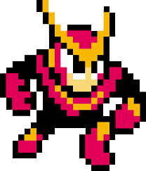
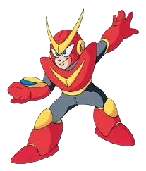

TIPS
- Time Stopper is powerful but drains energy; use it sparingly StrategyWiki+1.
- Item-1 (Wall Climb) can help with early climbs if you’re shaky megaman.fandom.com.
- Keep moving constantly — the stage rewards speed over precision.
- Practice the laser gauntlet routes before playing; memorizing jump points is key.
ROLE
- Speed & Mobility: Quick Man’s lightweight body allows him to move at one of the fastest speeds among Robot Masters, making him a high-speed threat
- Special Weapon: His signature is the Quick Boomerang, small razor-edged boomerangs fired rapidly from a launcher on his right arm
- Combat Style: He relies on speed and agility to close distance, using his boomerangs for both offense and defense. His design makes him vulnerable to weapons that can stop or disrupt movement, such as Flash Man’s Time Stopper and Air Man’s Air Shooter
ABILITIES
- Speed Mastery: Built with lightweight, flexible materials for extreme agility and high ground/air speed mizuumi.wiki+1.
- Quick Boomerang: His signature weapon — small, razor-edged boomerangs fired rapidly from a launcher on his right arm. Used for quick, repeated attacks megaman.miraheze.org+1.
- Sonic Velocity (Passive Skill): Boosts his speed when pushed to the brink in battle Mega Man RPG Prototype.
- Climb Speed: Can climb surfaces at 1.9× his normal speed mizuumi.wiki.
- Slide & Wavedash: Slide (1.15× speed) and wavedash (1.2× speed) for quick repositioning mizuumi.wiki.
Speed Control: Can adjust movement speed for dodging or closing distance